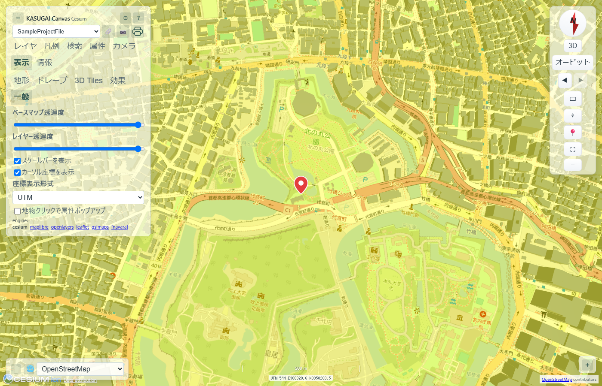
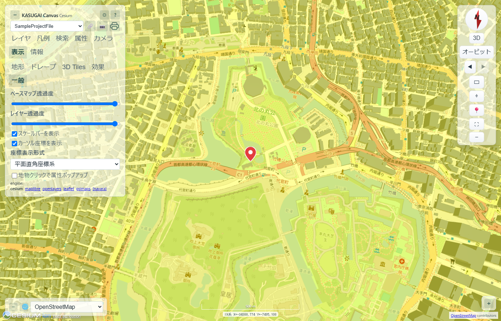

使い方
⛰️ Terrain / Shadow
地形表示と影表示をワンクリックで ON/OFF します。地形ソースは Re:Earth Terrain（楕円体高 / 標高）と国土地理院 DEM（5m+10m / 1m、TP基準）から選択可能で、CesiumWorldTerrain は Ion アクセスが必要なため同梱していません。高さ基準の違い（楕円体高 / 標高）は数十 m のずれになるため、3D Tiles の高さ基準に合わせた選択が必要です（詳細）。
🗺️ GeoJSON 3D ドレープ制御
ベクターレイヤーが「地面 / Terrain（DEM）/ 3D Tiles」のどの面に追従するかを、インスペクター行のオプションまたは表示 → ドレープ パネルで切り替えます。地形ありの現地調査資料では張り付き先の選択が見え方を左右します。詳細な仕組みは V0 の地形・ドレープ節 を参照してください。
🛡️ ベクター描画件数の上限
表示 → ドレープ タブで entity 描画ベクターの合計件数バジェットを制限します（既定 20000・0/空欄=無制限）。上限超過時は「ファイル先頭 N 件」ではなく表示範囲内の地物を優先して描画し、カメラ移動で追従します。切り捨ては描画に適用され、属性一覧も描画済み地物がそのまま行になるため同じ表示範囲の内容になります。ベクター検索索引は常に全件対象です。一覧には shown/total バッジが出ます。render=primitive のバッチ描画は上限の対象外です。
📐 座標表示形式・測地系
表示 → 一般タブの「座標表示形式」（度(10進) / 度分秒(DMS) / UTM / 平面直角座標系 I〜XIX系）と「測地系」（JGD2024・JGD2011 / JGD2000 / 日本測地系）のセレクトで、カーソル座標・地点座標ポップアップ・座標コピーの形式を切り替えられます。平面直角の系番号は最近傍原点から自動選択します。内部の座標はすべて WGS84 で一元管理しており、WGS84 ネイティブの緯度経度（度・度分秒・既定測地系）以外の表示には （参考値） が付きます。JGD2000・日本測地系など他測地系の座標は国土地理院の公式変換パラメータ（TKY2JGD / PatchJGD）で変換した参考値であり、現在位置の WGS84 と固定時点の測地成果とは地殻変動分の差が累積するため、測量成果としての利用は想定していません（詳細は V0 の座標・測地系の扱い節）。


🗺️ ミニマップ（オーバービュー）
表示 → 一般タブの「ミニマップを表示」で、画面左下に小さな2Dオーバービュー地図を表示します。主画面の約20倍（面積・約2.2ズーム引き）の広域を表示し、現在の表示範囲が赤い矩形で示され、ミニマップ上をクリックするとその地点へ現在の高度・姿勢のまま移動します。タイルは選択中のベースマップ（XYZ テンプレート）を追従し、テンプレートでない場合は地理院淡色地図を表示します。Leaflet は ON にした時点で CDN から遅延ロードするため、未使用時のコストはありません。
🌐 緯度経度グリッド
表示 → 一般タブのトグルで緯線・経線と度ラベルをオーバーレイ表示します。カメラ範囲に応じた nice-step 間隔で moveEnd 追従します。
設定方法（.kasc）
[QGIS 3D連携・Cesium のみ]
terrain: 名 | exaggeration=垂直誇張 / offset=m / shading=on / generator=flat|dem|online|mesh
scene3d: 名 | background=#RRGGBB / skybox=on|off / shadows=on|off / ao=on|off / edl=on|off
light: 名 | az=方位度 / el=仰角度 / intensity=N / color=#RRGGBB
[ベクター行オプション]
extrude=m / z=m （QGIS 3D押出し・基準高さ）
render=primitive|entity （entity=ドレープ可 / primitive=高速バッチ・描画上限対象外）
background: #ffffff （背景色）- ベクター描画件数の上限・座標表示形式・測地系・ミニマップ・緯度経度グリッドは表示タブの UI 設定です（.kasc 行はありません。設定はブラウザに保持）
- 既定スタイルの配色を変えたい場合は
default_style:行を使います（6-2 インスペクター）
関連ページ
- 4-1 ベースマップ選択 — 背景地図の切替
- 6-2 インスペクター — ドレープ・
render=primitive・extrude=の行オプション